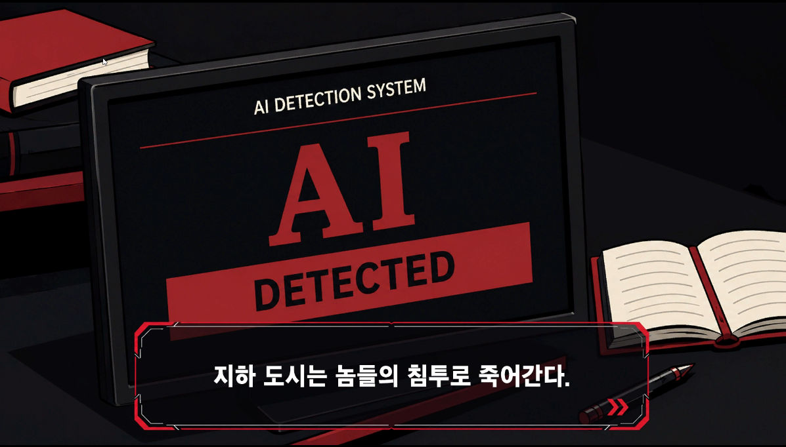
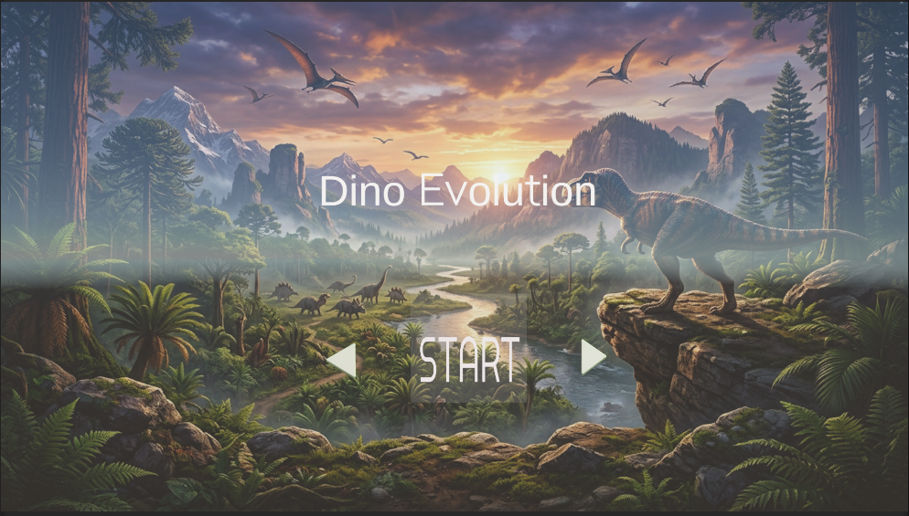
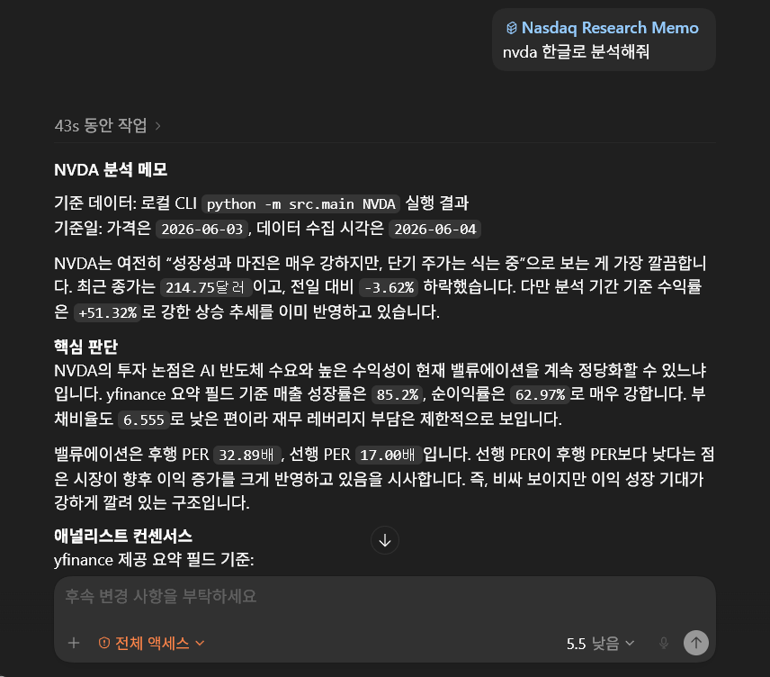

Projects

Multiplayer Fishing
Mirror 기반 서버/클라이언트 구조로 멀티플레이 낚시 흐름을 구현했습니다. 캐릭터 이동과 애니메이션 동기화, 서버 권한 처리, Supabase 데이터 저장 연동을 담당했습니다. 네트워크 지연과 상태 불일치 문제를 테스트하며 수정했습니다.

Knight Quest
자동 전투 기반의 2D 사이드스크롤 방치형 RPG입니다. 몬스터 탐지, 공격 루프, 성장 수치 계산, 보상 흐름을 C# 스크립트로 구성했습니다. 반복 플레이가 끊기지 않도록 전투 상태 전환과 UI 피드백을 정리했습니다.

Sunnyside Island
섬에서 자원을 수집하고 탈출용 배를 제작하는 2D 생존 생활 게임입니다. 자원 채집, 인벤토리, 제작 재료 조건, 맵 상호작용을 구현했습니다. 플레이 목표가 자연스럽게 이어지도록 수집과 제작 루프를 설계했습니다.

GNGC Gamejam 2026GNGC Gamejam 2026
AI를 주제로 한 4일 게임잼 프로젝트입니다. 기획 1명, 아트 2명, 프로그래머 1명으로 제작했고, 저는 유일한 프로그래머로 게임 루프, 웨이브 생성, 사격 판정, HUD, 보상 이벤트 등 프로그래밍 영역 전체를 담당했습니다.

Dino Evolution
작은 공룡으로 시작해 먹이를 획득하고 성장하는 3D 액션 게임입니다. 먹이 판정, EXP 누적, 레벨 비교, 성장 스케일 변경, HUD 피드백을 구현했습니다. 플레이어의 성장 단계에 따라 사냥 대상과 위험도를 다르게 구성했습니다.

Community Lounge
Next.js와 Supabase로 만든 네온 테마 커뮤니티 게시판입니다. 인증, 게시글 CRUD, 댓글/대댓글, 이미지 업로드, 목록 조회 기능을 구현했습니다. Supabase 연동 오류와 데이터 조회 흐름을 직접 디버깅하며 개선했습니다.

AgentQ Desktop
로컬 프로젝트를 분석하고 코드 검색, 파일 수정, 권한 승인, diff 검토를 수행하는 Windows 데스크톱 AI 코딩 에이전트입니다. WPF 기반 UI와 RAG 검색 흐름을 연결했습니다. 사용자가 변경 전후를 확인할 수 있도록 작업 승인 구조를 설계했습니다.

Mini Ralfthon 2026Mini Ralfthon
Nasdaq 종목 데이터를 수집해 기술 지표, 재무 요약, 뉴스 흐름을 Markdown/JSON 리서치 메모로 정리하는 Codex Plugin MVP입니다. ticker 입력부터 보고서 생성까지 자동화했습니다. 테스트 케이스를 추가해 출력 형식과 핵심 계산 흐름을 검증했습니다.

Unity Performance Audit Skill
Unity 프로젝트를 정적 분석해 렌더링, 물리, 텍스처, UI, 빌드 크기 위험을 점검하는 Codex Skill입니다. 프로젝트 구조와 설정을 읽어 모바일 최적화 관점의 리포트를 생성합니다. 반복 점검이 쉽도록 분석 항목과 결과 포맷을 표준화했습니다.